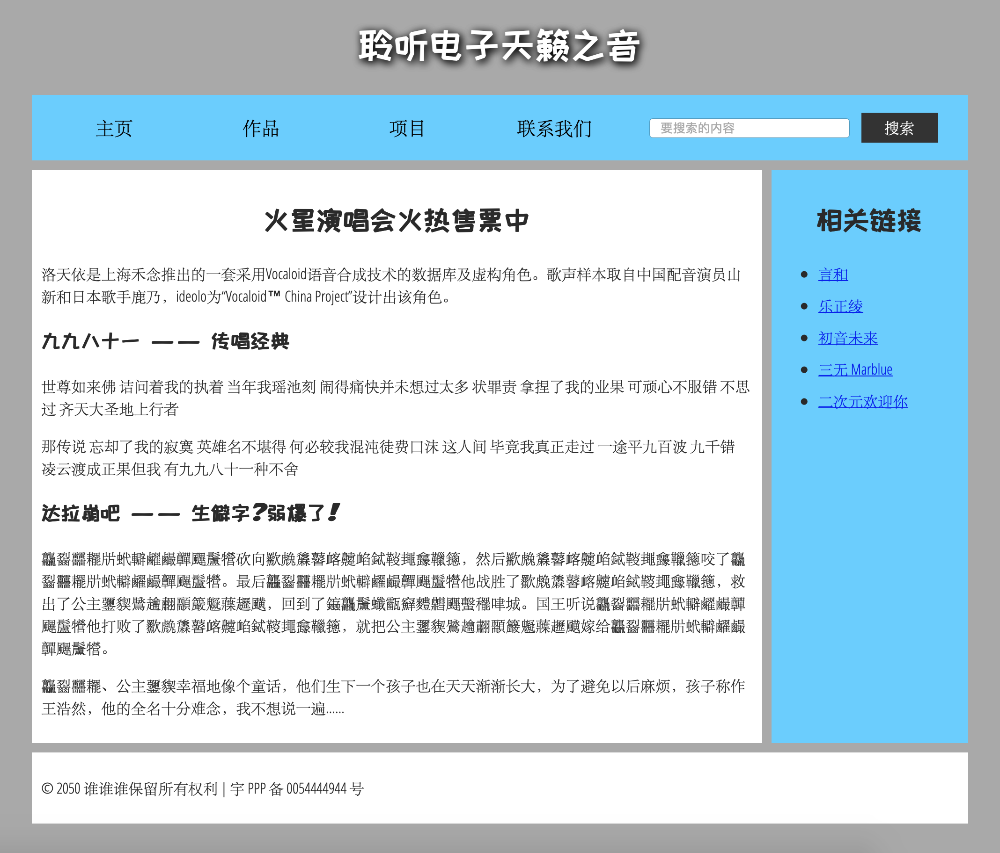

文档与网站结构¶
HTML 基本文档结构¶
HTML 文档的基本组成部分，具体见MDN
页眉
<header>导航栏
<nav>主内容
<main>侧边栏
<aside>页脚
<footer>文章
<article>节
<section>
直接上示例代码，来自MDN：
<!DOCTYPE html>
<html>
<head>
<meta charset="utf-8">
<title>二次元俱乐部</title>
<link href="https://fonts.googleapis.com/css?family=Open+Sans+Condensed:300|Sonsie+One" rel="stylesheet">
<link href="https://fonts.googleapis.com/css?family=ZCOOL+KuaiLe" rel="stylesheet">
<link href="style.css" rel="stylesheet">
</head>
<body>
<header> <!-- 本站所有网页的统一主标题 -->
<h1>聆听电子天籁之音</h1>
</header>
<nav> <!-- 本站统一的导航栏 -->
<ul>
<li><a href="#">主页</a></li>
<!-- 共n个导航栏项目，省略…… -->
</ul>
<form> <!-- 搜索栏是站点内导航的一个非线性的方式。 -->
<input type="search" name="q" placeholder="要搜索的内容">
<input type="submit" value="搜索">
</form>
</nav>
<main> <!-- 网页主体内容 -->
<article>
<!-- 此处包含一个 article（一篇文章），内容略…… -->
</article>
<aside> <!-- 侧边栏在主内容右侧 -->
<h2>相关链接</h2>
<ul>
<li><a href="#">这是一个超链接</a></li>
<!-- 侧边栏有n个超链接，略略略…… -->
</ul>
</aside>
</main>
<footer> <!-- 本站所有网页的统一页脚 -->
<p>© 2050 某某保留所有权利</p>
</footer>
</body>
</html>

无语义元素¶
无语义元素应仅用于找不到更好的块级元素时，或者不想增加特定的意义时。应配合使用 class 属性提供一些标签，使这些元素能易于查询。
<div>，块级无语义元素<span>，内联无语义元素
换行、水平分隔线¶
<br>，换行<hr>，水平分隔线